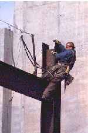
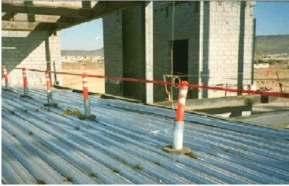
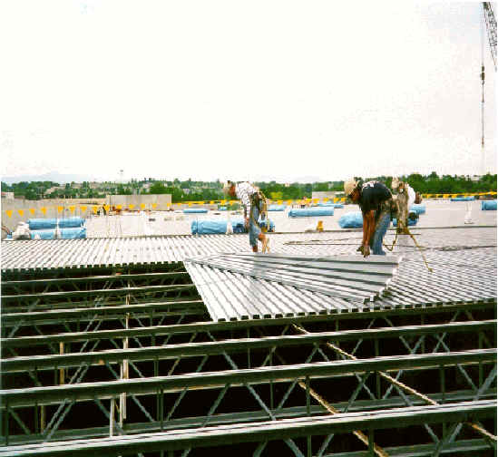
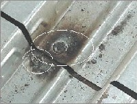
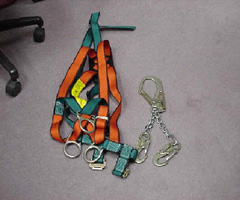

In steel erection, a new, very narrow working surface is constantly being created as skeletal steel
is erected at various heights. For many steel erectors, especially connectors, the work starts at
the top level of the structure. This means that anchor points above foot level are often limited or
unavailable. The special circumstances of steel erection can make conventional fall protection very
difficult to deploy below 15 feet. For this reason, the following requirements and exceptions in the
the steel erection fall protection standard have been made. [29 CFR 1926.760]
NOTE: Except where indicated, the same basic scaffold requirements that appear in this module also apply
to single-point adjustable, multi-point adjustable, catenary, interior hung, needle-beam, multi-level,
and float (ship) scaffolds.
Review the elements of suspended scaffold safety with the following modules:


- Employees who are on a walking/working surface with an unprotected edge more than 15 feet above a lower level must be protected by conventional fall protection. [29 CFR 1926.760(a)(1)]
- Perimeter safety cables must be installed at the final interior and exterior perimeters of multi-story structures as soon as the decking has been installed. [29 CFR 1926.760(a)(2)]
- Connectors and employees working in controlled decking zones must be protected from fall hazards as provided below. [29 CFR 1926.760(a)(3)] (See Connectors and Controlled Decking Zone.)
NOTE: The perimeter safety cables protect the detail crew that follows the decking crew.
Lack of Fall Protection Leads to Three Deaths
Case Reports:
- A hospital was being renovated and an additional structure attached. Two employees were working from an existing portion of the roof, moving sections of angle iron measuring 20 feet in length. The first employee bent over to pick up one end of an angle iron, and was expecting the other employee to pick up his end. When that did not occur, the first employee looked up and saw the victim standing, bent at the waist, with his hands on his knees. He was 6-12 inches from the edge of the roof, and did not respond when called to, but instead fell head first over a 10-inch parapet wall. He landed on the asphalt driveway and sustained trauma to the back of the head, as well as contusions to the right eye and torso. Based on the height of the roof and the employees' proximity to the edge, some form of fall protection should have been used. The victim died four hours after the accident.
- During steel erection, an employee was walking on a 5½-inch-wide steel beam that was over 37 feet above dry soil. He was not using fall protection. The beam apparently wobbled, and the employee lost his balance and fell to his death.
- Without any kind of fall protection, an employee was walking atop structural steel to check joints and bolts. He apparently slipped or misjudged his footing and fell approximately 20 feet to the concrete floor below, resulting in his death.
Connectors must:
- Be protected by conventional fall protection when working on a surface with an unprotected edge more than two stories or 30 feet above a lower level. [29 CFR 1926.760(b)(1)]
- Have completed the connector training described in 29 CFR 1926.761. [29 CFR 1926.760(b)(2)]
While working at heights over 15 and up to 30 feet, connectors must [29 CFR 1926.760(b)(3):
- Be provided with a complete personal fall arrest system or other allowable fall protection.
- Wear the equipment necessary for tying off.
Connectors Pay With Lives for Failure to Wear Fall Protection
Case Reports:
- Two connectors were erecting lightweight steel I-beams on the third floor of a 12-story building, 54 feet above the ground. One employee removed a choker sling from a beam and then attempted to place the sling onto a lower empty hook on a series of stringers. While the crawler tower crane was booming away from the steel, the wind moved the load line and stringer into the beam on which the employee was standing. The beam moved while the employee was trying to disengage the hook, and he fell to his death.
- Two steelworkers were setting beams on a steel erection project. One of them was installing a cross beam at the third level of a stair structure. According to his co-worker, he stepped onto the beam that had just been put into place and fell backward in a vertical position. He tried to catch the beam, but was unable to maintain a grasp. He then fell slightly forward and struck the beam immediately below, causing his body to assume a horizontal position until he hit the ground. He had fallen a total of 35 feet, and was killed.
- An employee was working on a steel erection 23 feet above the ground. He was instructed by the foreman to go to a connection at the eastern part of the building and start torquing the bolts there. The employee went to the area and, while working, slipped and fell to his death. He was not wearing a safety belt and lifeline when tightening bolts, nor were his co-workers.
- A CDZ can be established as a substitute for fall protection where metal decking is initially being installed and forms the leading edge of a work area over 15 and up to 30 feet above a lower level. [29 CFR 1926.760(c)]
- Leading-edge workers in a CDZ are required to:
- Be protected from fall hazards above 2 stories or 30 feet (whichever is less). [29 CFR 1926.760(c)(1)]
- Have completed CDZ training in accordance with 29 CFR 1926.761. [29 CFR 1926.760(c)(4)]
- Employees who are not engaged in leading-edge work and properly trained in the hazards involved are prohibited from entering the CDZ. [29 CFR 1926.760(c)(2) and 29 CFR 1926.760(c)(4)]
- The CDZ is required to:
- Be no more than 90 feet wide and 90 feet deep from any leading edge. [29 CFR 1926.760(c)(3)]
- Not exceed 3,000 square feet of unsecured decking. [29 CFR 1926.760(c)(5)]
- Have designated and clearly marked boundaries with control lines or the equivalent. [29 CFR 1926.760(c)(3)] NOTE: Control lines are commonly used as a marker because they create a highly visible boundary.
- Have safety deck attachments placed from the leading edge back to the control line. [29 CFR 1926.760(c)(6)]
- Have at least two safety deck attachments for each metal decking panel. [29 CFR 1926.760(c)(6)]
- Final deck attachments and the installation of shear connectors are prohibited from being done in the CDZ. [29 CFR 1926.760(c)(7)]
Worker Killed in Fall
Case Report:
- A crew of five employees was laying the first piece of metal decking after the insulation had been laid over a steel structure. One employee was at the southeast corner, standing on a platform with no guardrails, when he fell 25 feet and was killed.
- 
Controlled Decking Zone
- 
Leading Edge
- 
Safety Deck

Positioning device
- Guardrail systems, safety-net systems, personal fall-arrest systems, positioning-device systems and their components must conform to the criteria in 29 CFR 1926.502. (See Appendix G.) [29 CFR 1926.760(d)(1)]
- Fall-arrest system components must be used in fall-restraint systems and conform to the criteria in 29 CFR 1926.502. (See Appendix G.) [29 CFR 1926.760(d)(2)]
- Either body belts or body harnesses may be used in fall restraint systems for steel erection. [29 CFR 1926.760(d)(2)]
- Perimeter safety cables must meet the criteria for guardrail systems in 29 CFR 1926.502. (See Appendix G.) [29 CFR 1926.760(d)(3)]
The steel erector may leave fall protection in place so it may be used by other trades only if the controlling contractor [29 CFR 1926.760(e)]:
- Has directed the steel erector to leave the fall protection in place. [29 CFR 1926.760(e)(1)]
- Has inspected and accepted control and responsibility of the fall protection before authorizing other trades to work in the area. [29 CFR 1926.760(e)(2)]